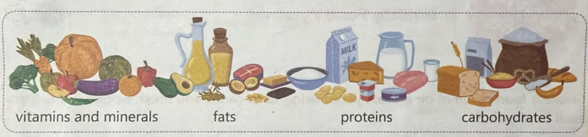
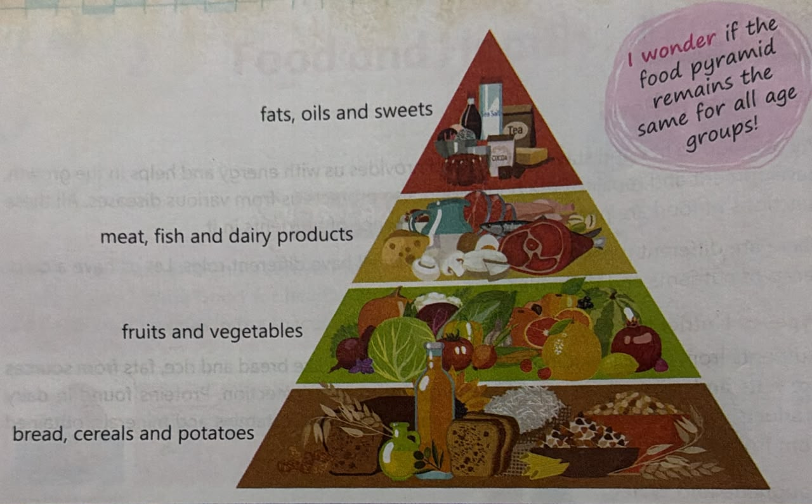
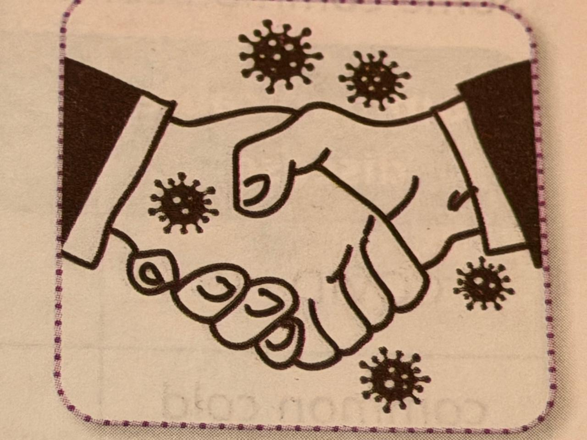
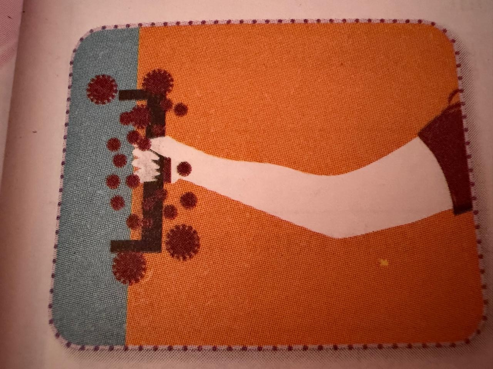
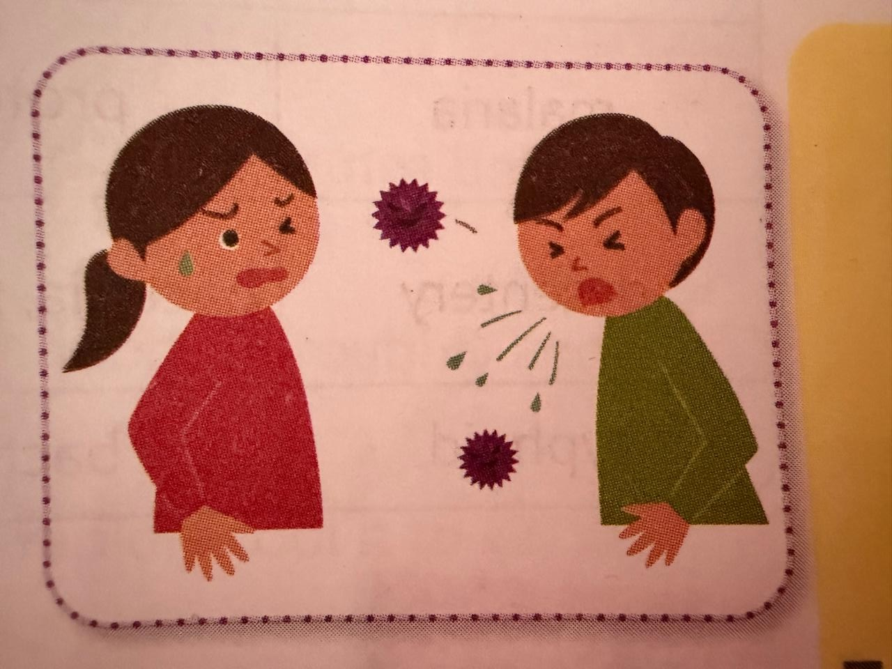
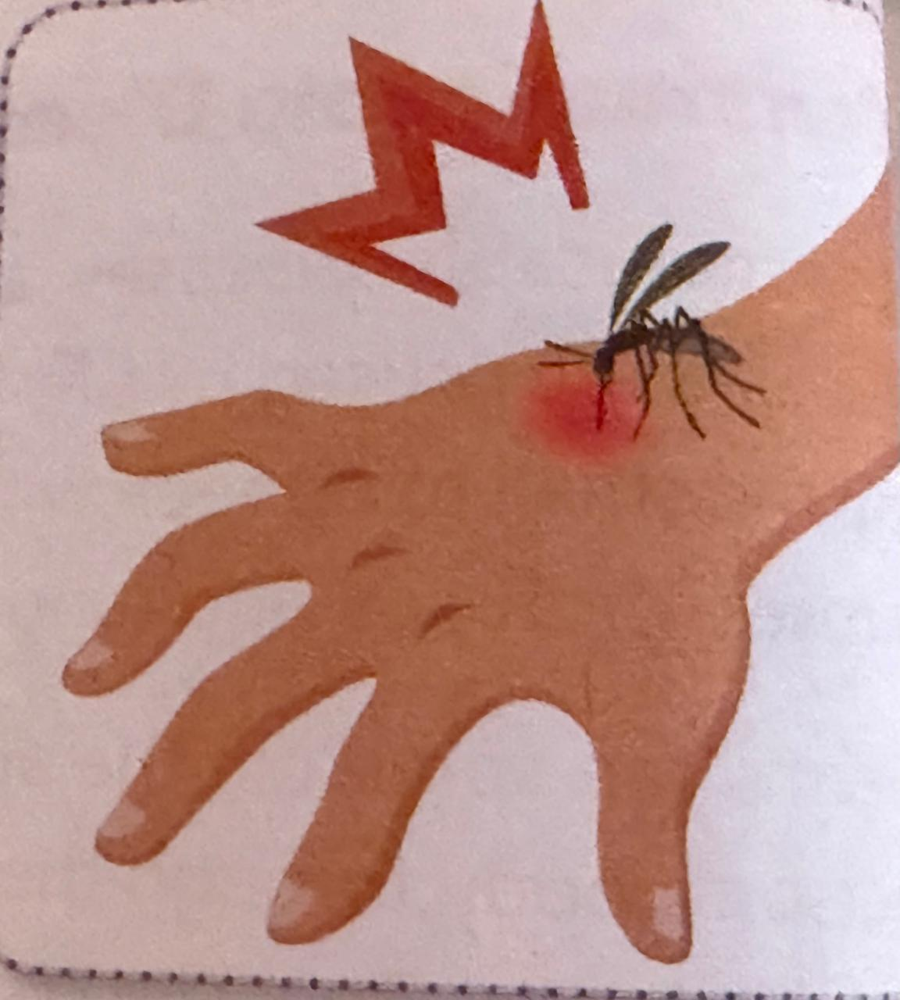

Look at Riya and her friends. Can you tell who has healthy habits? Write Good for healthy habits and Bad for unhealthy ones in the spaces provided.
Role of nutrients, roughage and water is keeping us healthy, deficiency diseases, communicable ann non-communicable diseses, are prevention and treatment of diseases
We eat food to live and stay healthy. Food provides us with energy and helps in the growth, development and repair of the body. Food also provides us from various diseases. All these functions of food are possible due to the presence of nutrients in it.
There are different types of nutrients, and they all have different roles. Let us have a quick recap of nutrients are their roles.
Nutrients from food, including carbohydrates in items like bread and rice, fats from sources like nuts and olive oil, are vital for energy and organ protection. Protiens found in dairy products, fish and meat help in growth and body repair. Vitamins and minerals, obtained from fruits and vegatables, support overall health.
In addition to the essential nutrients, we also require sufficient roughage and water in our diet. Roughage, derived from whole grains and fruits, aids digestion and prevents constipation. Water is important for temperature regulation, digestion and transportation of nutrients in the body. Drinking enough water helps us stay hydrated, which is essential for the proper functioning of the body.

A food pyramid is a visual representation of a balanced diet, showing the different food groups and their recommended quantities for healthy and balanced nutrition.
A typical food pyramid consists of several horizontal sections or layers, with each layer representing a different food group.
I wonder if the food pyramid remains the same for all age groups!

Not eating a balanced diet or eating a diet that is deficient in one or more nutrients leads to a deficiency of those nutrients in the body. Such a deficiency of nutrients may lead to deficiency diseases.
Let us find understand what diseases are.
When we fall sick, we do not feel like doing anything. This condition when the body is unable to function properly is called a disease.
Diseases can be of two types, communicable and non-communicable, depending on whether they can spread from one person to another or not.
The diseases that do not spread from one person to another are called non-communicable diseases. All deficiency diseases are non-communicable diseases. Let us learn about deficiency diseases.
Deficiency diseases are caused due to the deficieny of one or more nutrients in the diet. Some common deficiency diseases are their symptoms are summarised in the table below.
| Deficiency Disease | Deficiency Cause | Common Symptoms | Foods to be eaten to avoid deficiency |
|---|---|---|---|
| anemia | iron | fatigue, weakness and pale skin | red meat, poultry, fish, beans, lentis, tofu, and spinach |
| goitre | iodine | englarment of a gland in the neck region. | iodised salt and seafood |
| tooth decay | calcium | weak teeth and bones | milk, milk products, sprouts, multi-grain cereals and seasame seeds |
| night blindness | vitamin A | poor vision at night | carrots, sweet potatoes, pumpkin, spinach and cod liver oil |
| beriberi | vitamin B | extreme tiredness, loss of appetite and loss of muscle function. | fish, chicken, eggs, kidney beans and dairy products |
| scurvy | vitamin C | bleeding gums, swelling of joints and impaired wound healing. | oranges, lemons, grapefruits, strawberries, kiwi and tomatoes |
| rickets | vitamin D | weak and brittle bones | egg yolk, milk, mushroom and cod liver oil | sssss
| marasmus | carbohydrates, proteins and fats | severe weight loss, fatigue and weakness, growth impairment and dry and loose skin | rice, wheat, bread, pulses, eggs, milk and fish |
| kwashihorkor | proteins | scaly skin, thin legs, swollen stomach and ankles | pulses, milk, fish and eggs |
Overnutrition,or. excessive nutrient intake, occurs when a person consumes more nutrients than neeeded, leading to obesity. Obesity is characterised by excess fat deposits in one's body. If often results from the overconsuption of carbohydrates and fats that are not adequately utilised by the body. This can lead to health issues like high blood pressure and heart diseases.
Excessive consuption of junk food, which is low in nutrional value and high in carbohydrates, sugars, unhealthy fats and salt, is a major cause of obesity. Examples of junk food include burgers, pizzas, candies, cookies, cakes, pastries, soda , noodles, energy drinks and sweentend juices.
According to the World Health Organisation (WHO), at least 2.8 million adults die every year because of obesity.
Communicable diseasesare illnesses that can pass from one person to another. These diseases are caused by tiny organisims called germs, which are generally microbes. Microbes are too small to be seen without a microscope. Common types of microbes include bacteria, viruses, protozoa and fungi.
Germs can spread in the air when someone sneezes, coughs or spilts. They can also enter a person's body through the nose, mouth, wounds, cuts or by consuption of contaminated food and water. The various ways in which germs spread are mentioned below.
Some germs can be transferred through direct physical contact woth an infected person; for example, by shaking hands with an infected person. Diseases such as common cold, chickenpox and mealses can spread in this way.

Germs can also be transferred indirectly through objects or surfaces; for example, by touching a doorknob or a surface that has been touched by an infected person and then touching the face. COVID-19 can spread in this manner.

Certain diseases spread when germs are realeased into the air through coughing, sneezing or talking by an infected person. People nearby can inhale these germs, making them infected. Examples of such diseases include common cold and whooping cough.

Contaminated water sources carry germs that cause disease like choleraand desentery. When people consume or come into contact with contaminated water, they become infected and aquire such diseases.
Consuming contaminated food or breverages can lead to the transfer of certain germs, resulting in diseases like diarrhoea and jaundice.
Certain diseases are transferred by the flies and mosquitoes. Flies sit on food, contaminate it and act as a carrier of germs. Mosquitoes stuck the blood of a person infected with malaria or dengue and then bite someone else, causing that person to becomeinfected. This way, mosquitoes too act as a carrier of germs.

Some common communicable diseases are summirised in the table below.
| Communicable Diseases | Cause | Symptoms |
|---|---|---|
| COVID-19 | virus | cough, cold, fever, sore throat and shortness of breath |
| common cold | virus | cough, cold and sore throat |
| mealses | virus | runny nose, sore throat, white spots inside the mouth and fever |
| chickenpox | virus | rashes, fever and body pain |
| dengue | virus | high fever, rashes, joint and muscle pain and tiredness |
| malaria | protozoa | fever, chills, headache, stomach ache, muscle and joint pain |
| dysentery | bacteria, protozoa | diarrhoea, stomach ache, fever, dehydration and vomiting |
| typhoid | bacteria | fever, tiredness, loss of appetite and stomach ache |
Our body has a super cool defense system called the immune system. It serves like an army, fighting off germs and keeping us healthy!
Preventing the spread of communicable diseases involves simple measures:
1. Frequent handwashing: Wash hands with soap and water to remove germs.
2. Avoid handshakes: Minimize physical contact.
3. Maintain personal cleanliness: Take daily baths, wear clean clothes, cover the mouth and the nose when coughing or sneezing.
4. Exercise and rest: Proper exercise and rest keep us fit and healthy.
1. Prevent stagnant water: Prevent water accumulation, as mosquitoes breed in stagnant water.
2. Proper waste disposal: Use dustbins, cover kitchen waste and keep windows open to let it fresh air and sunlight.
3. Mosquito control: Use nets and coils to repel or kill mosquitoes.
1. Ensure clean water: Purify tap wate using RO or boil 10-15 minutes before consuption.
2. Eat fresh and clean food: Wash vegatables and fruits, cook food thoroughly and avoid eating food exposed to flies.
3. Pasteurize milk: Boil milk at a high temperature, and then rapidly cool it to kill the germs present in it.
Get vaccinated: Vaccination is crucial to prevent the spread of communicable diseases.
A vaccine contains dead or weakened germs that cause a particular disease. This helps in developing immunity against the disease. The process if administersting a vaccine is called vaccination.
Vaccines, administered through injection or orally, provide immunity against diseases like polio, mealses, typhoid and COVID19.
I wonder if vaccines are made from microbes, why they don't cause diseases!